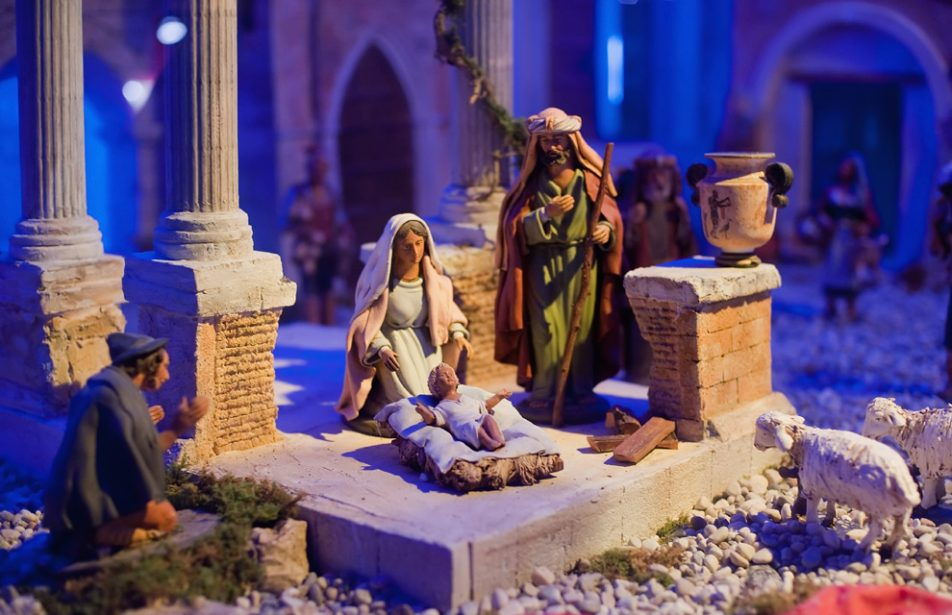
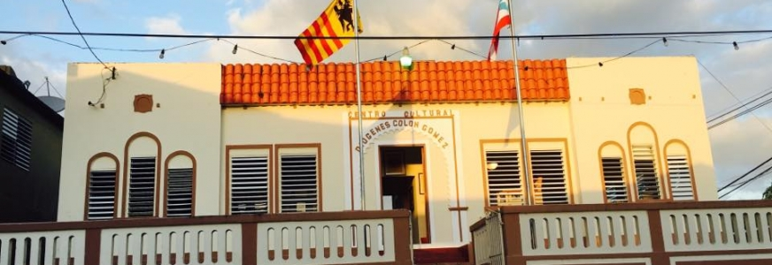

Cavernas Las Cabachuelas

Explora la Reserva Natural Las Cabachuelas y descubre zanjones, cavernas y un sistema de cuevas con alto valor ecológico, cultural, histórico y arqueológico. Petroglifos, pictografías, los fósiles del oso perezoso y el guabá son algunas de las atracciones de estas cuevas.
Pueden visitar las Cavernas las Cabachuelas en:
- Dirección: 8HX2+J22, Barahona, Morovis 00638
Nacimiento de Morovis

El Nacimiento de Morovis, tradición de belén puertorriqueña con más de dos mil piezas,
estará disponible para disfrute del pueblo hasta el domingo 20 de enero, como parte de la fidelidad a la tradición de las octavitas.
Durante décadas, el doctor Francisco del Río, con oficina en el casco urbano moroveño, ha auspiciado
este hermoso nacimiento que se exhibe cada año durante la época navideña en sus instalaciones en la calle Progreso,
justo al lado de la plaza pública “Juan Evangelista Rivera”.
- Dirección: 8HGR+HR8, Cll Progreso, Morovis, 00687
Cascada Barrio Perchas

Localizado en la región central de nuestra Isla, Morovis fue fundado oficialmente en el 1818. Su primer alcalde fue Juan José de Torres. Es una zona montañosa la cual se forma cascaditas como estas. Hermosas corrientes de agua que bajan por la montaña.
Pueden visitar la Cascada Barrio Perchas en:
- Dirección: 7HHV+8XM, PR-155, Morovis, 00687
Centro Cultural Diógenes Colón Gómez
El Centro Cultural Diógenes Colon Gómez en Morovis, fue fundado en el año 1964. Lleva el nombre de quien en vida fuese el Director y Fundador de la Banda Municipal. Su sede está localizada en el antigüo Hospital Municipal del pueblo de Morovis.
Pueden visitar el Centro Cultural Diógenes Colón Gómez en:
- Dirección: 8HFR+XW3, Calle Baldorioty, Morovis, 00687